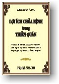

BuddhaSasana
Home Page
This document is written in Vietnamese, with Unicode
Times font
|  |
Lợi ích chữa bệnh trong Thiền QuánThiền
sư MAHASI SAYADAW
|
Lời giới thiệuHiện nay, phong trào hành thiền tại Việt Nam và trên thế giới đang ngày càng được phát triển, tại Myanmar có nhiều trung tâm Thiền Minh Sát (Vipassanà), nơi đó các nhà Sư và các Phật tử đang ngày đêm thực hành Thiền Quán để thanh lọc thân tâm, ở Âu Mỹ nhiều trung tâm Thiền Minh Sát đã được mọc lên để giúp cho các thiền sinh nơi này thực tập những lời dạy của Ðức Phật một cách sống động. Thiền Quán không những giúp chữa bệnh phiền não trong tâm mà còn giúp hành giả vượt qua những cơn bệnh ngặt nghèo thể xác. Tác phẩm "Phương pháp chữa bệnh bằng Thiền Quán" của Thiền sư Mahasi Sayadaw do Thượng tọa Tăng Ðịnh phiên dịch sang Việt ngữ giúp cho chúng ta có một niềm tin vững chắc vào kết quả hữu hiệu của Thiền Minh Sát. Trong tinh thần xiển dương pháp hành, tôi xin trân trọng giới thiệu tác phẩm "Phương pháp chữa bệnh bằng Thiền Quán" đến quý độc giả nhất là các thiền sinh Việt Nam đang tu tập Thiền Quán. Thiền viện Phước Sơn,
Ðồi Lá Giang - Phần I - A. PHƯƠNG PHÁP MÀ ÐỨC PHẬT ÁP DỤNG ÐỂ CHỮA BỆNH CHO CHÍNH NGÀI: Trong suốt mùa an cư kiết hạ thứ bốn mươi lăm và cũng là mùa an cư cuối cùng, Ðức Phật trú ngụ tại Vesàli, trong ngôi làng Veluva. Các bộ kinh Mahàvagga, Dìghanikàya và Mahàvagga, Samyutta Nikàya đều có ghi rằng: Lúc bấy giờ Ðức Phật lâm vào một cơn trọng bệnh, nhưng cuối cùng Ngài đã tự chữa khỏi chứng bệnh ấy bằng phương pháp thiền Minh Sát.
Bài kinh trên ghi lại cách duy trì sự nhẫn nại trong khi đang chánh niệm và tỉnh giác, và thái độ không biểu lộ sự đau đớn, lại được giải thích tỉ mỉ thêm trong phần chú giải như sau:
Tìkà (phụ chú giải) giải thích nhóm chữ "phân biệt bằng tuệ quán" như vầy: "Dùng tuệ quán để phân biệt sự hiện hữu chốc lát của các cảm thọ đau đớn khi chúng phân nhỏ ra, hay phân biệt bản chất đau khổ của chúng, hay thấy rõ sự vắng mặt của cái ta; Ngài đã nhẫn nại. Trong khi nhiếp phục cơn đau và bằng pháp ghi nhận các tướng (tức là vô thường, khổ, vô ngã) mà đã được phân loại rõ ràng bằng tuệ quán, Ngài đã chấp nhận và chịu đựng được những cảm thọ ấy. Nếu nói rằng Ngài bị đau đớn là không đúng."
(Trên đây là bài giải thích theo Annhakathà và Tikà. Ngày nay, khi các hành giả có được tuệ quán thấy rõ cảm thọ đau đớn xảy ra từng lúc từng lúc, và thấy rõ các cảm giác ấy đang tan rã ra từng phần nhỏ trong khi đang chuyên tâm chánh niệm ghi nhận "đau à, đau à" v.v... thì hành giả có thể cảm nhận được cơn đau đang vơi dịu và cảm thấy thoải mái dễ chịu nhờ trạng thái không đau đớn. Bài kinh trên, theo đúng với kinh nghiệm thực tiễn của các hành giả ngày nay là rất rõ ràng). Tiếp tục bài kinh:
(Atthakathà nêu ra hai loại tinh tấn: Một loại tinh tấn liên quan đến thiền quán - vipassanà và một loại liên quan đến quả của định - phalasàmàpatti. Loại tinh tấn thứ hai mang ý nghĩa "sự tinh tấn đặc biệt", không được rõ ràng, bởi vì nó chỉ do kết quả của thánh đạo - ariyamagga - và do thiền quán vipassanà tạo ra. Nếu nói rằng sự tinh tấn ở trên ám chỉ đến tinh tấn trong thiền Minh Sát thì rõ ràng hơn.)
Trong đoạn kinh này, Atthakathà giải thích thêm về sự biến mất của cơn bệnh như sau:
Tam tạng Pàli và Atthakathà cho thấy rõ rằng các khổ thọ có thể bị đoạn diệt bằng phương pháp thiền Minh Sát hay bằng quả định (phalasàmàpatti). Do đó, cần chú ý rằng các bậc thánh có thể làm lắng dịu các khổ thọ bằng cả hai cách, đó là thiền Minh Sát và quả định; còn đối với những kẻ phàm phu (puthujjana), chỉ sử dụng được pháp Minh Sát mà thôi. Khả năng chữa trị các chứng bệnh và đoạn trừ các cảm thọ đau đớn qua con đường độc nhất - thiền Minh Sát - càng làm cho chúng ta tin tưởng hơn - qua những bằng chứng được kể lại dưới đây: B. HAI TRƯỜNG HỢP DO ÐẠI ÐỨC MAHASI SAYADAW KỂ LẠI: B.1. Một vị Trưởng lão tự chữa trị khỏi chứng bệnh rối loạn tiêu hóa kinh niên Vào khoảng năm 1945, tại một ngôi làng mang tên Leik Chin, cách ngôi làng Seik Khun bốn dặm về hướng tây bắc, một vị trưởng lão nọ chỉ nghe nói về phương pháp thực hành thiền Minh Sát của ngài Mahasi Sayadaw, đã đồng ý tin ngay, và bắt đầu thực hành pháp quán niệm tại chùa của ngài. Xem ra chỉ trong vòng vài ngày, định và tuệ quán của thiền Minh Sát phi thường đã sanh lên và chứng bệnh rối loạn tiêu hoá kinh niên mà ngài đã chịu đựng trên hai mươi năm, hoàn toàn biến mất. Chứng bệnh kinh niên ấy đã hành hạ ngài từ khi ngài còn là một vị sa di mười tám tuổi và khiến ngài phải uống thuốc và xoa bóp mỗi ngày. Ngoài chứng bệnh ấy ra, ngài còn bị các chứng về thấp khớp, khiến ngài phải xoa bóp mỗi ngày mới bớt đau. Nhờ chuyên tâm vào pháp niệm, tất cả những chứng bệnh ấy hoàn toàn biến mất; từ nay ngài có thể sống thoải mái mà không phải nhờ đến thuốc men hay xoa bóp. Các đệ tử Tỳ khưu của ngài kể lại rằng: "Vì trưởng lão có tin tưởng sâu đậm rằng, nếu pháp quán niệm được thực hành đúng với phương pháp của thiền Minh Sát thì bất cứ bệnh nào cũng có thể được chữa khỏi, nên ngài luôn luôn áp dụng phương pháp chữa bệnh qua thiền Minh Sát mà không nhờ vào thuốc men thường tình, bất cứ khi nào ngài cảm thấy bất an hoặc bệnh hoạn. Ngài thường khuyên nhủ các đệ tử Tỳ khưu, sa di và thiện nam tín nữ hãy thực hành pháp ấy khi nào có bệnh". B.2. Cai rượu qua pháp niệm. Maung Ma sống ở làng Zaung Dan, cách ngôi làng Seik Khun nơi mà anh sanh ra hai dặm về phía bắc. Anh ta còn trẻ, có vợ và rất nghiện rượu. Vào khoảng năm 1945, các anh chị của Maung Ma đều là những người siêng năng hành thiền ở tịnh xá Mahasi; họ thuyết phục anh ta thực hành thiền Minh Sát. Maung Ma hứa làm theo và chịu khởi sự vào một ngày đã định. Ðến ngày ấy, khi các anh chị đến gọi Maung Ma đi đến chỗ hành thiền thì thấy anh ta đang quờ quạng trong men rượu. Vào ngày hôm sau, các anh chị của Maung Ma ra đi sớm hơn và đến trước khi anh bắt đầu uống rượu; nhờ vậy, họ đã đưa anh vào cốc thiền mà không gặp khó khăn nào. Maung Ma tinh tấn thực hành theo lời chỉ dạy của ngài Mahasi Sayadaw và thấy thỏa mãn trong pháp đến nỗi anh không chịu rời khỏi chùa để về nhà. Maung Ma nói rằng anh muốn trở thành một vị Tỳ khưu . "Vì anh đã có gia đình, do đó hãy tiếp tục lo cho xong các phận sự của mình trước đã. Lần sau khi nào thấy có thể xuất gia được thì đến tu", ngài Sayadaw đã an ủi anh ta như thế và cho anh ra về. Maung Ma thực tâm rất tôn kính Pháp. Người ta nói rằng ngay khi anh ta đang mang hàng hoá trên vai và đi bán chúng, anh vẫn không rời chánh niệm, và trong khi gặt lúa cũng vậy, cứ mỗi lần gặt anh đều ghi nhận ít nhất là ba lần. Một lần khác, Maung Ma tự hỏi rằng liệu mình có còn thèm rượu nữa không. Anh ta đưa ca rượu lên miệng và nhấp một hớp, rồi nhanh chóng nhìn vào tâm của mình xem có ưa thích uống không. Xem ra, trong khi chú tâm theo dõi như vậy bốn, năm, sáu lần thì tuệ Minh Sát sanh lên và phát triển đến chỗ tịnh diệt. Về sau, khi Maung Ma đang trải qua một cảm thọ đau đớn từ cơn bệnh ngặt nghèo, anh ta vẫn không bỏ qua pháp niệm quý báu của mình. Vào đêm mà anh sắp lìa đời, trong khi đang chánh niệm ghi nhận các cảm thọ trong thân, anh ta kể lại với vợ như sau: - Bây giờ khúc chân từ mắt cá đến đầu gối không còn sống nữa. Sự sống chỉ còn lại từ đầu đến bánh chè mà thôi. Ôi, bây giờ sự sống chỉ còn từ hông trở lên ... bây giờ chỉ còn từ rốn ... và bây giờ chỉ còn ở giữa ngực, trong quả tim. Từng bước, từng bước, anh đã mô tả những thay đổi đang sanh lên trong thân của mình. Cuối cùng anh ta thốt lên: - Tôi sắp chết đây. Ðừng sợ chết. Một ngày nào đó em cũng phải chết thôi. Hãy lấy đó mà phát triển tinh tấn trong việc thực hành pháp ... Và thực vậy, ngay sau những lời nhắn nhủ cuối cùng đến vợ nhà, anh ta đã trút hơi thở cuối cùng. Ðây là bài tường thuật, cho thấy phương pháp trị liệu bằng pháp có thể chấm dứt tật nghiện rượu mãi mãi cho đến hết cuộc đời. C. BẢY TRƯỜNG HỢP DO NGÀI SAYADAW U SUJATA KỂ LẠI C.1. Một nữ hành giả tự chữa trị chứng khối u ở bụng: Vào khoảng tháng 9 năm 1962, Daw Khin Thew, một phụ nữ ở tại Ta Mue, Rangoon, bắt đầu hành thiền Minh Sát tại thiền đường Thathana của thành phố. Ba ngày sau, tôi thấy một nhóm nữ hành giả đang vây quanh và xoa bóp cho bà ta. - Chuyện gì xảy ra thế? Tôi hỏi. - Con đang kiềm chế cơn đau. Daw Khin Thew trả lời. - Có một khối u trong bụng của con, nên con không thể ngồi lâu được. Chỉ sau nửa tiếng đồng hồ là cái bụng của con lại phát cơn đau, nên con đành cáo lỗi để nhờ người thoa bóp. Con đã đi bác sĩ, ông ta nói rằng có một khối u lớn trong bụng và cần phải giải phẫu để cắt bỏ khối u ấy. Ðến nay đã bốn năm rồi. Năm nay thì ông ta nói: "Không được rồi, phải giải phẫu thôi!" nhưng nếu giải phẫu thì con sẽ chết trong khi pháp là chỗ nương tựa đáng tin cậy con lại chưa đạt được. Con nghĩ rằng mình phải cố gắng để thực hành pháp Minh Sát này. Nghĩ vậy, con đã đến đây; và bây giờ, sau khi ngồi thiền được vỏn vẹn một tiếng đồng hồ thì những cơn đau dữ dội ở bụng lại bộc phát ... - Thế mà bà chẳng cho sư biết chuyện này ngay từ đầu. Tôi nói. Ðức Phật đã thuyết giảng bài kinh Tứ niệm xứ để người ta có thể thực hành pháp niệm trong bốn oai nghi là đi, đứng, nằm, ngồi. Trong trường hợp của bà, để ngăn chặn cơn đau ở bụng, bà phải ngồi dựa vào vách, hay ngồi dựa vào ghế, thậm chí nằm dài để niệm cũng được. Chỉ ngồi như vậy, bà sẽ thấy không đau. Bà có thể ngồi hoặc nằm để niệm tùy thích. Khi định và tuệ quán sanh lên thì khối u của bà sẽ tan mất. Tôi chỉ bảo cho bà ta như thế. - Con sẽ tiếp tục hành thiền theo lời dạy của Ngài Sayadaw, nhưng con vẫn muốn đi khám bác sĩ. Bà ta yêu cầu và tôi đã cho phép bà ta làm như thế. Bởi vậy bà ta về nhà và đi khám bác sĩ. Sau khi khám cho bà, bác sĩ nói rằng: - Bà sẽ phải chịu đựng một cuộc giải phẫu để lấy khối u ra. Bà không đuợc tiếp tục ngồi (thực hành Minh Sát). Nếu bà ngồi, bà có thể chết. Tôi bắt đầu biết chuyện đó khi bà ta trở lại, sau hai ngày ở nhà. Trong trường hợp ấy, bà phải cương quyết hành thiền; dầu bà còn sống hay sẽ chết, hoặc khối u ấy có tan biến hay không, chắc chắn chúng tôi sẽ biết rõ điều đó. Nếu bà muốn ngồi trên ghế hay dựa vào vách v. v. .bà có thể làm như thế. Trong khi nằm, bà cũng có thể chánh niệm được. Trong những lúc ăn cơm cũng vậy, trong khi đưa tay ra lấy vật thực, cầm trong tay và đưa nó lên ... há miệng, đưa vào miệng, nhai, nuốt, ... bà phải tiếp tục niệm theo mỗi hành động ấy. Tất cả điều này đều đúng với những gì mà đức Thế Tôn đã thuyết giảng, và Ðại đức Mahasi Sayadaw cũng đã giải thích và chỉ dạy thiền cho việc thực hành thiền Minh Sát. Daw Khin Thew tiếp tục hành thiền theo những lời chỉ dạy trên. Khoảng mười lăm ngày sau, trong khi vừa ăn vừa niệm Minh Sát, bà ta cảm thấy có một mùi rất hôi thối. Không biết là cái gì, bà ta suy xét một lát, rồi nghĩ rằng chắc đó là mùi hôi thối từ khối u ấy. - Nếu quả thực đúng như vậy, thì khối u của bà có thể đang tan rã. Tôi nhắc nhở khuyến khích bà. Thật đúng như tôi đã nói, cái khối u to lớn của bà dần dần tan biến, và cuối cùng nó đã biến mất. Daw Khin Thew vô cùng vui sướng. Khi bà ta trở lại bác sĩ để tái khám thì bác sĩ rất đỗi ngạc nhiên. - Ồ, khối u đã mất rồi! Bà đã làm cách gì thế? Ông ta ngạc nhiên hỏi. - Tôi đã thực hành thiền Minh Sát ở thiền đường Mahasi Thathana. Dầu bác sĩ đã nói là nếu tôi ngồi thiền thì tôi sẽ chết, bây giờ không những tôi không chết mà khối u của tôi cũng đã biến mất! Bà ta trả lời đắc thắng. Và ông bác sĩ thốt lên rằng: - Ồ, thật vậy sao, pháp của bà thật là mầu nhiệm (Hình như vị bác sĩ kia là người Ấn Ðộ). C.2. Một vị Tỳ khưu tự chữa khỏi bệnh bướu: Một vị Tỳ khưu tám hạ ở ngôi làng Kin Byar, thị trấn Shwe Bo, đến tại thiền đường Mahasi Thathana, Rangoon, và bắt đầu thực hành thiền Minh Sát vào ngày mồng 3 tháng 10 (âl) - khoảng tháng mười một năm 1974 -. Tên của ngài là U Sobhana và ngài bệnh bướu ở bụng từ khi ngài còn là một vị sa di mười bảy tuổi. Sau các bữa ăn, cục bướu thường cương ra ở hông bên phải, khiến ngài không làm sao mà ngồi cho được, ngài nói như vậy. Nếu không có cách nào hay hơn thì ngài thường phải đè bàn tay vào phần dưới của khối u, và chỉ khi ấy ngài mới có thể ngồi yên được. Nhiều người bảo ngài nên đi bệnh viện và giải phẫu khối u ấy đi. Nhưng ngài thì sợ giải phẫu, do vậy ngài cứ để yên mọi chuyện đâu vào đó. Trong thời gian nhập hạ của ngài ở thiền đường Mahasi Thathana, Rangoon, ngài thường không nằm sau các bữa ăn, mà thay vào đó chỉ ngồi hướng thẳng đến nhà Phát lồ và tiếp tục hành Minh Sát. Trong khi đang ngồi, ngài thường chống tay vào chỗ có khối u. Sau khoảng hai mươi ngày tinh tấn hành thiền, ngài không chống tay vào chỗ bướu ấy nữa (bắt đầu từ lúc ngồi sau bữa ăn), vì ngài thấy rằng mình có thể ngồi rất thoải mái và niệm cũng rất tốt. Chỉ khi ấy ngài mới nhận ra rằng khối u của mình đã tan mất rồi. Ngài có thể ngồi trên ba tiếng đồng hồ, vào trong một thời gian năm ngày liên tục, ngài có thể duy trì pháp niệm không gián đoạn suốt cả ngày lẫn đêm, mà chẳng nằm ngủ chút nào. Vào ngày nhập hạ thứ bốn mươi lăm, ngài có đủ khả năng để nghe bốn băng nói về Nyazin (sự diễn tiến của Tuệ Minh Sát). Ðến bây giờ, Ðại đức U Sobhana đang làm những phận sự của một vị Tỳ khưu thường trú. Chứng đau bướu của ngài không còn nữa và ngài mãi mãi khoẻ mạnh. C.3. Một vị thiện nam bị một cục bướu lớn, đã tự chữa khỏi: U Aung Shwe, 45 tuổi, ở tại Daing Wun Kwin, Moulmein, bị một cục bướu lớn ở bụng. Khi đến khám ở bệnh viện, người ta cho biết rằng, ông ta cần phải đi giải phẫu nó. Bởi vậy, với quyết tâm thực hành thiền Minh Sát, là chỗ nương tựa, trước khi phải giải phẫu, ông ta đến tại thiền đường Mahasi Thathana, Rangoon và bắt đầu thực hành thiền Minh Sát vào ngày 20- tháng 5 âl (khoảng tháng 6-1968). một hôm, trong khi đang hành Minh Sát, ông ta đi vào tuệ quán, và cục bướu ở bụng của ông ta bỗng vỡ ra, sau đó nó tan chảy và máu mủ bắn ra. Tựa như ông ta có thể nghe bằng tai và thấy bằng mắt vậy. Từ đó, ông ta hoàn toàn thoát khỏi bệnh bướu. Sau khi tiếp tục hành thiền để làm thỏa mãn các vị thầy của mình, cuối cùng ông ta đạt được đầy đủ tất cả tuệ quán. Cho đến nay thì ông ta vẫn khoẻ mạnh và an vui làm các phước sự của mình về cả pháp học lẫn pháp hành. C.4. Một hành giả tự chữa khỏi bệnh viêm khớp ở đầu gối: Vào ngày 10- tháng 7 âl (khoảng tháng 8-1951), Ko Mya Saung, 40 tuổi, đã đến thiền đường Myin Gyan, một chi nhánh của thiền đường Mahasi, và khởi sự hành Minh Sát dưới sự chỉ dẫn của một vị Sayadaw. Ko Mya Saung mang bệnh viêm khớp đầu gối đã 5 năm. Xem ra chứng bệnh vẫn không chữa khỏi được, dầu đã trải qua sự chữa trị của nhiều bác sĩ, anh ta lấy làm lo lắng và vì vậy đã đến thiền đường Myin Gyan để hành Minh Sát. Trong khi đang hành pháp, hai đầu gối bị sưng lên, và càng ghi nhận chú niệm chừng nào thì cơn đau càng tăng lên. Khi vị Sayadaw đã cho lời chỉ dạy, anh ta cương quyết theo dõi ghi nhận không hề chùn bước. Cơn đau cứ hành hạ quá đỗi khiến nước mắt chảy ròng trên mặt và thân của anh ta bị đảo tới đảo lui, hoặc thình lình thót người lên. Trạng thái này kéo dài đến bốn ngày. Và trong khi đang cố gắng hành Minh Sát như vậy, anh thấy bằng trực cảm là đầu gối và các đốt xương đang vỡ ra. Ðầy hốt hoảng, anh ta gào lên: - Ôi, nó vỡ! Cái đầu gối to lớn của tôi đã vỡ! Sau biến cố ấy, anh ta quá khiếp đảm đến nỗi không dám niệm tiếp nữa. Tuy nhiên, nhờ sự cổ vũ của các vị Sayadaw, anh lại tiếp tục niệm; cuối cùng, chỗ sưng và cơn đau ở đầu gối hoàn toàn biến mất và Ko Mya không còn khổ sở với chứng bệnh ấy nữa. C.5. Một vị tu sĩ tự chữa khỏi bệnh do ăn phải vật thực có bùa Một vị Sayadaw (tu sĩ), 55 tuổi, tên là U Sumana, ở tại tịnh xá của làng Nga Da Yaw, về hướng tây bắc của Pyin Gyan, đến tại thiền đường Myin Gyan vào ngày 2 tháng 7 âl (khoảng tháng 8-1957) và thực hành thiền Minh Sát. Vị Sayadaw vào lúc bấy giờ rất bất an trong tâm do bị một khối sưng lớn ở bụng; và dầu ngài có được sự vơi giảm đôi chút nhờ sự chữa trị của nhiều bác sĩ, ngài vẫn không thể chữa khỏi hẳn được; và vì thế, ngài quyết định thực hành Minh Sát. Xem trong thời gian an cư kiết hạ, ngài bị đẩy tới, kéo lui, bị đánh bằng khủy tay, bị giật nảy người và thường xuyên bị quấy rầy bởi bốn loại ngải này. Ngài kể rằng ngài có thể trông thấy hình tướng diện mạo của chúng. Và khi ngài cương quyết ghi nhận chúng thì ngài phải chịu những sự co thắt và những cơn đau khó chịu ở bụng. Quá khiếp đảm, ngài bắt đầu thu xếp mọi thứ để về nhà. Rồi bị Sayadaw ở thiền đường Myin Gyan nói với ngài rằng: - Ðừng sợ hãi. Chứng bệnh ấy đến đúng lúc chắc chắn sẽ tiêu tan. Ráng niệm để chiến thắng nó! Niệm ở đây là niệm Thất giác chi, nếu hiền giả thật sự bị khiếp đảm thì chúng tôi sẽ cử người đến canh phòng cho hiền giả. Ðược an ủi nhờ những lời đoán chắc và sách tấn của vị thiền sư, Sayadaw U Sumana thay đổi ý định, không về chùa nữa, và thay vào đó ngài tiếp tục hành Minh Sát. Một buổi sáng sớm nọ, một cơn đau mãnh liệt phát sanh từ trong bụng, khiến ngài phải xổ đường ruột ở sau hè. Trong khi đang xổ như vậy, ngài thấy những cục cục và mủ có màu xanh nhạt, đỏ lợt, vàng lợt và lục nhạt đang tiết ra. Thân của ngài thấy nhẹ nhàng và hoạt bát lên. Từ đó trở đi, ngài hoàn toàn hết bệnh ấy. Ngài rất thỏa mãn và vui sướng đến nỗi ngài vội vã đi đến ông thầy ở thiền đường và nói rằng: - Những nỗi đau đớn của tôi đã hết rồi! Hoàn toàn hết rồi! Chúng đã biến mất rồi! Như vậy, ngài Sayadaw U Sumana đã khở sự hành Minh Sát vào ngày mồng 2 tháng 7(âl), và đến tháng tám sau đó thì ngài đã tự chữa khỏi bệnh. Sức khỏe trở lại bình thường, ngài tiếp tục hành thiền ở thiền đường cho đến hết mùa an cư. C.6. Một hành giả cao tuổi tự chữa khỏi chứng bệnh hen (suyễn) U Aung Myint, 70 tuổi, ở tại ngôi làng Le Thit, về hướng đông của Myin Gyan, khởi sự hành Minh Sát tại thiền đường Myin Gyan và ngày 22 tháng 8 (âl) (khoảng tháng 9-1964). Ông ta bị bệnh hen (suyễn) đã 30 năm. Khi trao 30 kyats (tiền Miến Ðiện) cho người thị giả của vị thiền sư, ông ta thỉnh cầu ông thầy của mình rằng: - Nếu con chết thì hãy dùng số tiền này để lo mai táng cho con. - Ðừng lo lắng, này đại thí chủ! Ta sẽ chăm lo mọi chuyện, vị Sayadaw đã hứa chắc với ông ta. Ông hãy cố gắng hành thiền đi! Sáu ngày sau, do kết quả của việc hành Minh Sát, tình trạng của ông ta tệ hơn nhiều. Những cơn khó thở và sự thở hổn hển làm ông ta không thể ăn ngay cả cháo suốt hai ngày, và khiến ông ta bị đuối sức đến nỗi ông phải khòm người xuống khi đang ngồi, giống như một người gù lưng. Những hành giả khác nghĩ rằng ông già này sắp chết đến nơi rồi nên đến vây quanh để giúp ông ta, và họ báo tin với vị Sayadaw của họ. Vị Sayadaw đến sách tấn và khuyên ông niệm theo cơn mệt của mình. U Aung tín thọ và bắt đầu niệm, "mệt à, mệt à"; sau hai tiếng đồng hồ thì cơn mệt được thay thế bằng một cảm giác dễ chịu và thoải mái. Khoảng một tuần sau, ông ta lại lâm vào tình trạng như cũ. Và suốt ba ngày liền không thể ăn cháo được. Nhiều người nghĩ rằng chắc chắn ông ta sẽ chết thôi. Vị Sayadaw lại một lần nữa quả quyết với ông ta rằng chứng bệnh ấy sắp hết và sau những lời sách tấn, khuyên ông ta hãy chuyên tâm vào pháp niệm. Nghe vậy, những người ở quanh vị hành giả già bèn mỉm cười và xì xào rằng: - Ông ta hầu như đã ở gần cửa tử! Làm sao ông ta có thể niệm được chút nào nữa? Về phần ông U Aung, trong khi chuyên tâm chú niệm đúng như những lời sách tấn của vị Sayadaw - bằng con mắt tuệ quán, ông ta thấy cái bụng của mình vỡ ra và những cục mủ có màu xanh lợt, đỏ lợt, vàng lợt và lục nhạt đang chảy ra. - Bạch ngài, cái bụng to lớn của con đã vỡ ra rồi! Ông ta kêu lên. Sau đó, ông ta tiếp tục hành pháp niệm theo sự chỉ dẫn của vị Sayadaw, và không còn khổ sở bởi bệnh suyễn ấy nữa, vì nó đã tiêu mất rồi. Bởi vì U Aung Myint đã từng làm một vị Tỳ khưu nên khả năng thuyết giảng của ông ta giúp ông ta có thể giảng pháp cho bạn bè và những quyến thuộc khi trở về lại nhà. Cho đến nay (1973), ông ta vẫn còn sống và khỏe mạnh. C.7. Một hành giả tự chữa khỏi chứng phong ngứa Vào ngày 19 tháng 10 (âl) - khoảng tháng 11 năm 1974, Maung Win Myint 20 tuổi, ở tại số nhà 90, đường Pan Zo Tan, Rangoon, khởi sự hành Minh Sát tại thiền đường Mahasi Thathana. Cuối cùng anh ta đã tự chữa khỏi chứng bệnh ngoài da của mình. Ðây là bài tường thuật của anh ta. "Khi tôi mười sáu tuổi, tôi đã đến tại Shewe Gyint. Ở đó tôi đã ăn nhiều loại thịt nai, thịt mèo rừng, rắn, kỳ đà, tắc kè và những loại thịt khoái khẩu khác, toàn thân của tôi, cả tay lẫn chân, bắt đầu ngứa ngáy và nhức nhối. Máu của tôi bị nhiễm độc. Da của tôi có những vết đốm màu trắng. Hằng đêm tôi thường thức dậy để cào gải những chỗ ngứa, hầu như suốt cả đêm. Do điều này mà việc học hành của tôi không tiến bộ được và cảm thấy bị sụt lùi." "Tôi đến chữa trị nơi bác sĩ M.J đúng ba tháng, không sót một ngày nào. Tôi phải uống thuốc và tiêm chích mỗi ngày. Tiền chữa bệnh mỗi lần như vậy là 8 kyat. Nhưng bệnh vẫn không được chữa khỏi." "Sau đó tôi đi đến một chuyên gia chữa bệnh ngoài da, là bác sĩ K.L, lại được tiêm chích và uống thuốc. Sau hai tháng chữa trị mà cũng chẳng ăn thua gì. Tiền thuốc lên đến mười kyat mỗi ngày. Tôi không thể thưởng thức những buổi biểu diễn ở nhà hát dầu chỉ vài chốc lát. Hầu như mọi lúc tôi đều phải đối diện với chứng bệnh phong ngứa cay nghiệt này. Từ năm 16 tuổi đến 20 tuổi, tôi phải chịu đựng tình trạng bệnh hoạn này mà chẳng có một ngày nào được thoải mái." Vào ngày 2-12-1974, ông nội tôi gởi tôi đến thiền đường này để hành Minh Sát. Chỉ trong vòng hai phút sau khi tôi đã ngồi thì cơn ngứa lại sanh lên. Dầu tôi vẫn chánh niệm theo dõi nó, nó cũng chẳng biến mất. Vào ngày 11 tháng 12, cơn ngứa lại khởi lên dữ dội hơn, khiến tôi phải trốn khỏi thiền đường. Nhưng ngay khi về lại nhà, chứng ngứa vẫn như cũ, thế là tôi phải làm hai công việc xen kẽ, niệm rồi lại gải, gải rồi lại niệm. Ðến khi trời vừa sáng, ông nội gọi tôi trở lại thiền đường. Dầu thực tình tôi không muốn theo ông ta, nhưng dù sao tôi cũng phải trở lại đó. Vào lúc xế chiều, tôi đi đến vị Sayadaw và kể cho ngài biết rằng tôi không thể niệm được vì chứng ngứa quá mức chịu đựng. "Hãy ghi nhận để khắc phục nó, rồi chứng ngứa cũng sẽ biến mất thôi. Khi con đi chích thuốc, con sẽ phải trả tiền cho việc tiêm chích ấy và con cũng cảm thọ đau đớn khi bị chích vào người. Nếu con chánh niệm ghi nhận thì con không phải trả tiền gì cả, lại không cảm thấy đau chút nào." Vị Sayadaw đã đáp lại bằng những lời sách tấn cổ vũ. Rồi vị Sayadaw nói thêm rằng: - Hãy nhẫn nại và chuyên chú ghi nhận cơn ngứa ấy. Ðừng để pháp niệm bị đứt quãng! Rồi thế nào nó cũng sẽ diệt mất. Ðầy tin tưởng, tôi trở lại ngồi vào tiết 5 giờ chiều. Chỉ sau 5 phút là cơn ngứa khởi lên. Bằng quyết tâm khắc phục nó, tôi chuyên chú niệm: "ngứa à, ngứa à" và cuối cùng nó đã biến mất! Tôi vui sướng. Trong tiết đầu của đêm, khoảng từ sáu đến bảy giờ chiều, cơn ngứa lại xuất hiện. Lúc này cơn ngứa thật sự nhiều hơn và nó khiến cho tôi phải chảy nước mắt. Dầu tôi đã quyết tâm vững chí ghi nhận nó - tâm niệm mà người cứ run rẩy như bị ma nhập vậy - nhưng cơn ngứa vẫn không lặn đi. Rồi tôi lại chú tâm vào cái bụng phồng xọp và quay sang theo dõi ghi nhận nó. Trong khi đang làm như vậy, kỳ diệu thay, cơn ngứa bỗng biến mất! Vào những ngày sau, cứ mỗi lần cơn ngứa xuất hiện là tôi bắt đầu niệm, thế là nó lặn mất. Tôi sung sướng và tiếp tục ngồi hăng hái hơn. Vào ngày thứ hai mươi thì cơn ngứa trở lại. Ðầu tiên nó không chịu lặn đi dầu tôi đã niệm vào nó. Nước mắt chảy ra và toàn thân tôi rươm rướm mồ hôi. Thình lình, toàn thân tôi có những đợt biến động, nhưng tôi vẫn vững tâm chánh niệm, nên cuối cùng chứng ngứa ấy đã biến mất. Tôi cũng chẳng có một ý nghĩ nào để tìm hiểu xem nó đã xảy ra như thế nào! Trong tiết ngồi thiền từ ba đến năm giờ sáng, vào ngày 10-1-1975, chân, tay, lưng và đầu của tôi đều bị ngứa một cách trầm trọng. Nhờ pháp ghi nhận, cơn ngứa biến mất. Nhưng về sau, khi đang niệm thì toàn thân tôi bỗng nổi ngứa, và pháp niệm lại được chiếu vào, tất cả những cảm thọ ngứa ngáy bỗng nhiên lại biến mất, như nó đang thoát ra ở đỉnh đầu; cơn ngứa khó chịu mà tôi đang cảm thọ cũng theo đó mà biến mất. Vào khoảng 11 giờ sáng khi tôi đang ngồi một lát bên ngoài trước khi tắm, một con chó lạc đến ngồi bên cạnh tôi. Tôi đuổi nó đi, vì tôi không thể chịu nổi mùi hôi hám của nó. Nhưng khi tôi vào phòng thì mùi hôi thối vẫn còn ở ngay đó. Tôi tự hỏi: "mùi hôi thối này từ đâu đến?" Và bắt đầu nhìn quanh, chỉ thấy rằng chính thân của tôi mang mùi hôi ấy! Tôi vội vã đi tắm, thoa xà phòng lên người và cọ rửa kĩ càng. Nhưng vô ích, vì mùi hôi thối ấy vẫn không tẩy đi được. Ðúng hai ngày, cho đến ngày thứ mười hai, mùi hôi ấy xì ra từ người tôi. Vì quá xấu hổ, tôi chẳng nói chuyện này cho vị Sayadaw biết vào lúc ấy. Sau đó, trong khi đang chánh niệm ghi nhận nó, thì mùi hôi của nó biến mất. Tất cả cảm thọ ngứa ngáy cũng biến mất. Máu của tôi được trong sạch trở lại, những đốm trắng trên người cũng biến mất và da của tôi có sắc bình thường, tươi mát và khả ái. Về sau, khi tôi đến bệnh viện da liễu để khám lại, các y tá rất đỗi ngạc nhiên, vì họ đã từng nói rằng: "dầu anh có chích thuốc bao nhiêu chăng nữa cũng không thể chữa khỏi bệnh này đâu." Chắc chắn họ phải ngạc nhiên thôi! Sau đó họ hỏi bệnh của tôi được chữa bằng cách nào, tôi trả lời: - Tôi đến thiền đường Mahasi Thathana và thực hành thiền Minh Sát. Khi tôi đang tiếp tục quan sát và ghi nhận các Danh Sắc đang sanh lên, thì chứng bệnh ấy hoàn toàn biến mất. - Thế à! Họ trầm trồ khen ngợi, "Ồ, pháp này thật sự có năng lực". Ðây là bài kể lại do vị Sayadaw U Sujata nghe được từ hành giả Win Myint, là người đã bị bệnh ngứa ngoài da suốt bốn năm. -ooOoo- |
Chân thành cám ơn Tỳ
kheo Tăng Ðịnh và Tỳ kheo Thiện Minh, Chùa Kỳ Viên, Quận 3, Sài
Gòn,
đã gửi tặng phiên bản điện tử (Bình Anson, tháng 5, 2001)
update: 01-06-2001